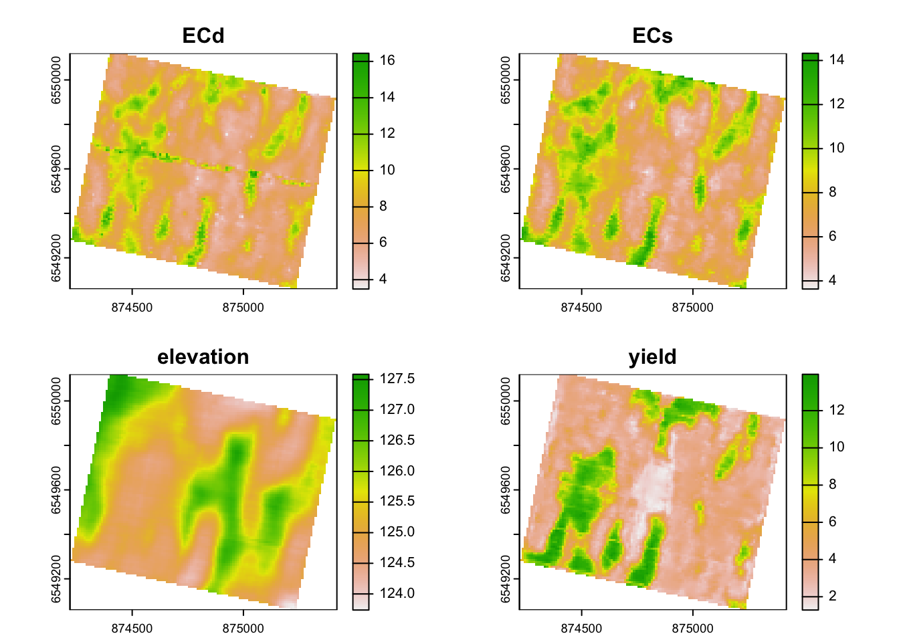
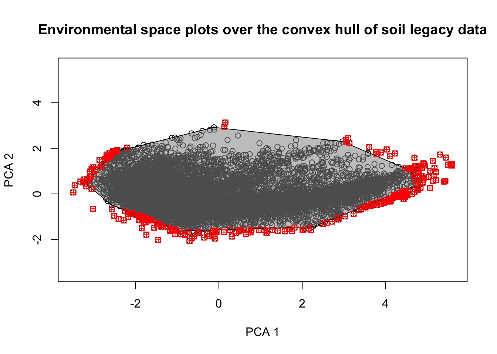
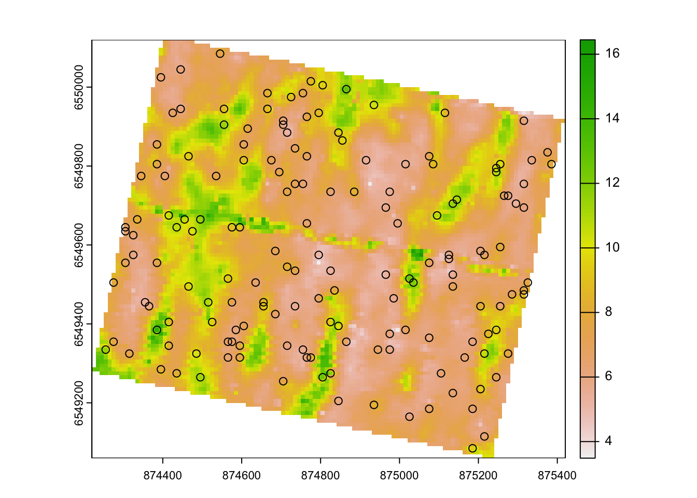

Soil Sampling Design
Soil Sampling DesignChapter 3 Creating a new sampling design
Determining the optimal sample size
We load R packages and define the working directory to the directory in which the actual file is located and load the environmental rasters from the data folder.
# Load packages as a vector objects
packages <- c("sp", "terra", "clhs", "entropy", "tripack","manipulate","dplyr","plotly") # Create a vector of packages to use
lapply(packages, require, character.only = TRUE) # Load packages
rm(packages) # Remove object to save memory space
# Set working directory to source file location
setwd(dirname(rstudioapi::getActiveDocumentContext()$path))## Load raster covariate data----
# Read Spatial data covariates as rasters with terra
rasters <- "data/rasters"
cov.dat <- list.files(rasters, pattern = "tif$", recursive = TRUE, full.names = TRUE)
cov.dat <- terra::rast(cov.dat) plot(cov.dat)

(#fig:plot_covdata_03)Plot of the covariates
# Define empty vectors to store results
number_of_samples <- c()
prop_explained <- c()
klo_samples <-c()
samples_storage <- list()
# Define the number of samples to be tested in a loop (from initial to final) and the step of the sequence
initial.n <- 50
final.n <- 300
by.n <- 55 for (dede in seq(initial.n, final.n, by=by.n)){
p.dat_I <- spatSample(cov.dat,dede, na.rm=TRUE,xy=TRUE,method="random")
p.dat_I_sp <- p.dat_I
coordinates(p.dat_I_sp)<- ~ x + y
# Store sampling scheme in list
samples_storage[[paste0("N", dede)]] <- p.dat_I_sp
# Get covariate values for each point
p.dat_I <- p.dat_I[3:ncol(p.dat_I)]
## Comparison of population and sample distributions ----
# Kullback-Leibler (KL) divergence
# Quantiles of the study area: Number of bins
nb<- 25
#quantile matrix (of the covariate data)
q.mat<- matrix(NA, nrow=(nb+1), ncol= nlyr(cov.dat))
j=1
for (i in 1:nlyr(cov.dat)){ #note the index start here
#get a quantile matrix together of the covariates
ran1 <- minmax(cov.dat[[i]])[2] - minmax(cov.dat[[i]])[1]
step1<- ran1/nb
q.mat[,j]<- seq(minmax(cov.dat[[i]])[1], to = minmax(cov.dat[[i]])[2], by =step1)
j<- j+1}
q.mat
# Hypercube of covariates in study area
cov.dat.df <- as.data.frame(cov.dat) # convert SpatRaster to dataframe
cov.mat<- matrix(1, nrow=nb, ncol=ncol(q.mat))
for (i in 1:nrow(cov.dat.df)){ # the number of pixels
cntj<- 1
for (j in 1:ncol(cov.dat.df)){ #for each column
dd<- cov.dat.df[i,j]
for (k in 1:nb){ #for each quantile
kl<- q.mat[k, cntj]
ku<- q.mat[k+1, cntj]
if (is.na(dd)) {
print('Missing')
}
else if (dd >= kl & dd <= ku){cov.mat[k, cntj]<- cov.mat[k, cntj] + 1}
}
cntj<- cntj+1
}
}
cov.mat
# Compare whole study area covariate space with the selected sample
# Sample data hypercube (essentially the same script as for the grid data but just doing it on the sample data)
h.mat<- matrix(1, nrow=nb, ncol=ncol(q.mat))
for (ii in 1:nrow(p.dat_I)){ # the number of observations
cntj<- 1
for (jj in 1:ncol(p.dat_I)){ #for each column
dd<- p.dat_I[ii,jj]
for (kk in 1:nb){ #for each quantile
kl<- q.mat[kk, cntj]
ku<- q.mat[kk+1, cntj]
if (dd >= kl & dd <= ku){h.mat[kk, cntj]<- h.mat[kk, cntj] + 1}
}
cntj<- cntj+1
}
}
h.mat
## Compute Kullback-Leibler (KL) divergence
kl.index <-c()
for(i in 1:ncol(cov.dat.df)){
kl <- KL.empirical(c(cov.mat[,i]), c(h.mat[,i]))
kl.index <- c(kl.index,kl)
klo <- mean(kl.index)
}
#### Representativeness of the Legacy Dataset: ----
## Calculate the proportion of "env. variables" in the covariate spectra that fall within the convex hull of variables in the "environmental sample space"
# Principal component of the legacy data sample
pca.s = prcomp(p.dat_I,scale=TRUE, center=TRUE)
scores_pca1 = as.data.frame(pca.s$x)
# Plot the first 2 principal components and convex hull
rand.tr <- tri.mesh(scores_pca1[,1],scores_pca1[,2],"remove") # Delaunay triangulation
rand.ch<-convex.hull(rand.tr, plot.it=F) # convex hull
pr_poly = cbind(x=c(rand.ch$x),y=c(rand.ch$y)) # save the convex hull vertices
# plot(scores_pca1[,1], scores_pca1[,2], xlab="PCA 1", ylab="PCA 2", xlim=c(min(scores_pca1[,1:2]), max(scores_pca1[,1:2])),ylim=c(min(scores_pca1[,1:2]), max(scores_pca1[,1:2])), main='Convex hull of soil legacy data')
# lines(c(rand.ch$x,rand.ch$x[1]), c(rand.ch$y,rand.ch$y[1]),col="red",lwd=1) # draw the convex hull (domain of legacy data)
# PCA projection of study area population onto the principal components
PCA_projection<- predict(pca.s, cov.dat.df) # Project study area population onto sample PC
newScores = cbind(x=PCA_projection[,1],y=PCA_projection[,2]) # PC scores of projected population
# Check which points fall within the polygon
pip <- point.in.polygon(newScores[,2], newScores[,1], pr_poly[,2],pr_poly[,1],mode.checked=FALSE)
newScores <- data.frame(cbind(newScores, pip))
# Plot the polygon and all points to be checked
# if(dede == final.n){
# plot(newScores, xlab="PCA 1", ylab="PCA 2", xlim=c(min(newScores[,1:2]), max(newScores[,1:2])), ylim=c(min(newScores[,1:2]), max(newScores[,1:2])), col='black', main='Environmental space plots over the convex hull of soil legacy data')
# polygon(pr_poly,col='#99999990')
# # Plot points outside convex hull
# points(newScores[which(newScores$pip==0),1:2],pch='X', col='red')
# }
# Proportion of the conditions in the study area that fall within the convex hull
#sum(newScores$pip)/nrow(newScores)*100
klo_samples <- c(klo_samples,klo)
prop_explained <- c(prop_explained,sum(newScores$pip)/nrow(newScores)*100)
number_of_samples <- c(number_of_samples,dede)
# print(paste("N samples = ",dede, " out of ",final.n, " ;KL = ", klo, ";Proportion = ", sum(newScores$pip)/nrow(newScores)*100 ))
}
# Plot the polygon and all points to be checked
plot(newScores[,1:2], xlab="PCA 1", ylab="PCA 2", xlim=c(min(newScores[,1:2]), max(newScores[,1:2])), ylim=c(min(newScores[,1:2]), max(newScores[,1:2])),
col='black', main='Environmental space plots over the convex hull of soil legacy data')
polygon(pr_poly,col='#99999990')
# # Plot points outside convex hull
points(newScores[which(newScores$pip==0),1:2], col='red', pch=12, cex =1)

(#fig:compute_n_optimal_03)Distribution of covariates in the sample space
Figure @ref(fig:chunk-compute_n_optimal_03) shows the distribution of covariates in the sample space.
# Merge data from number of samples, KL Divercence and % representativeness
results <- data.frame(number_of_samples,klo_samples,prop_explained)
names(results)<-c("N","KL","Perc")
# Determine the minimum sample size to accounf for 95% of representativeness of the covariate diversity
optimal_n <- results %>%
filter(Perc >=95) %>%
filter(KL ==min(KL) | N == min(N) | Perc ==min(Perc) ) %>%
filter(N == min(N))
optimal_n## N KL Perc
## 1 270 0.03985505 96.81086N_final <- samples_storage[paste0("N",optimal_n$N)][[1]]
plot(cov.dat[[1]])
points(N_final)

(#fig:fig:tag-for-figure)Covariates and distribution of samples
plot_ly(results,
x = ~N,
y = ~KL,
mode = "lines+markers",
type = "scatter",
name = "KL divergence") %>%
add_trace(x = ~N,
y = ~Perc,
mode = "lines+markers",
type = "scatter",
yaxis = "y2",
name = "% Representativeness") %>%
add_trace(x = ~optimal_n$N,
y = ~optimal_n$Perc,
yaxis = "y2",
mode = "markers",
name = "Optimal N",
marker = list(size = 8, color = '#d62728',line = list(color = 'black', width = 1))) %>%
layout(xaxis = list(title = "N",
showgrid = T,
dtick = 50,
tickfont = list(size = 11)),
yaxis = list(title = "KL divergence", showgrid = F ),
yaxis2 = list(title = "Representativeness (%)",
overlaying = "y", side = "right"),
legend = list(orientation = "h", y = 1.2, x = 0.1,
traceorder = "normal"),
margin = list(t = 50, b = 50, r = 100, l = 80),
hovermode = 'x') %>%
config(displayModeBar = FALSE) (#fig:plot_KLfunction_03)KL Divergence and Proportion of Representativeness as function of sample size